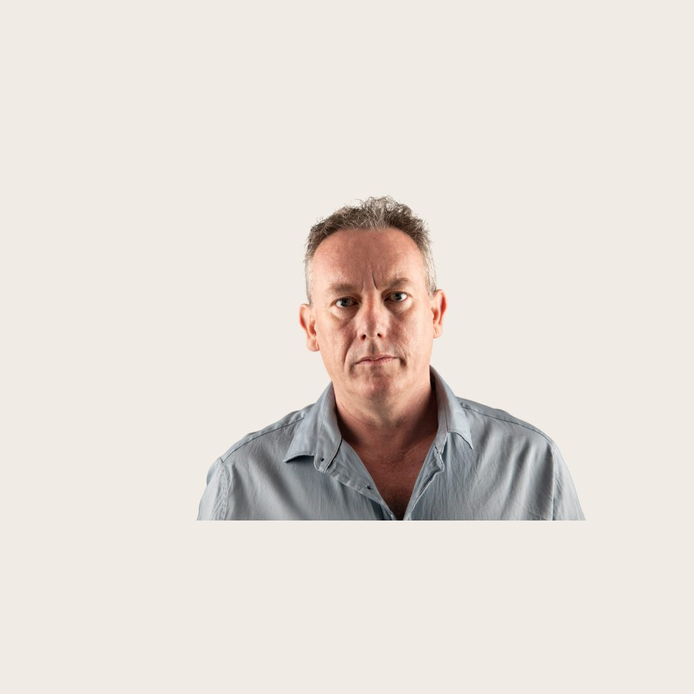
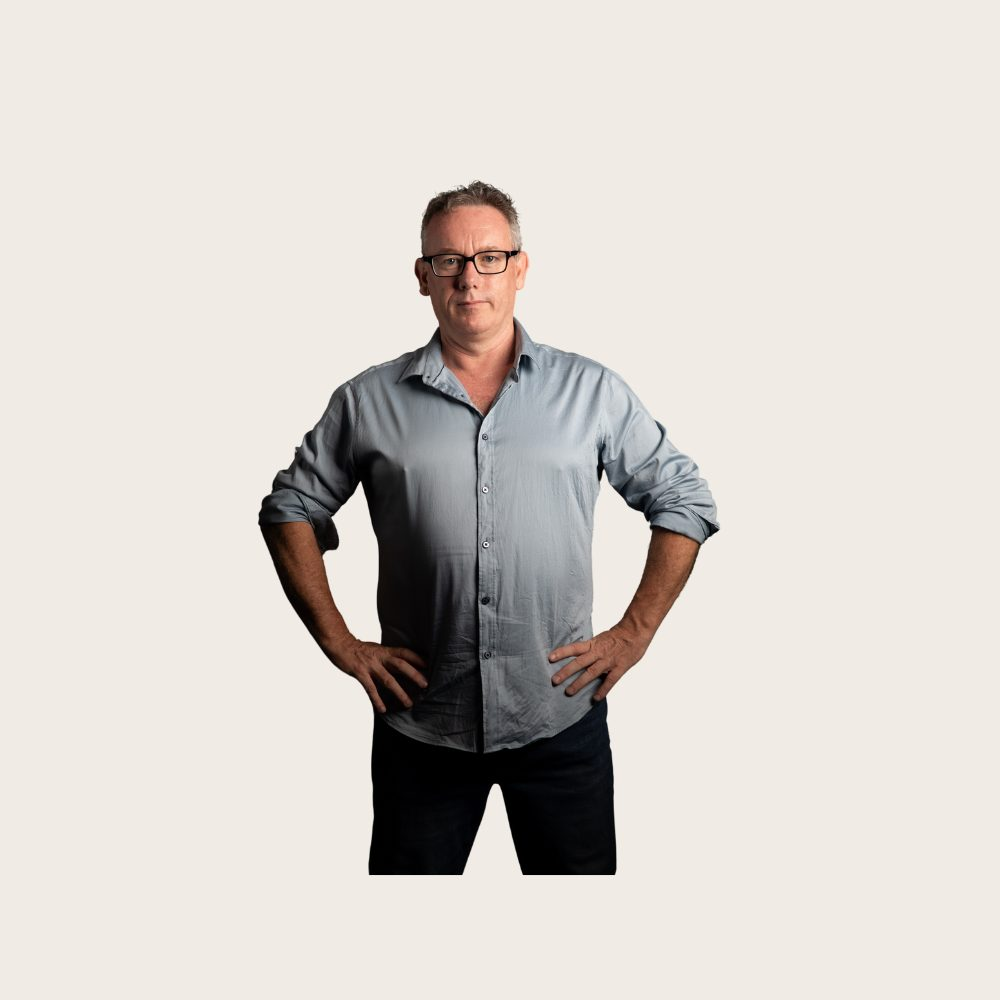
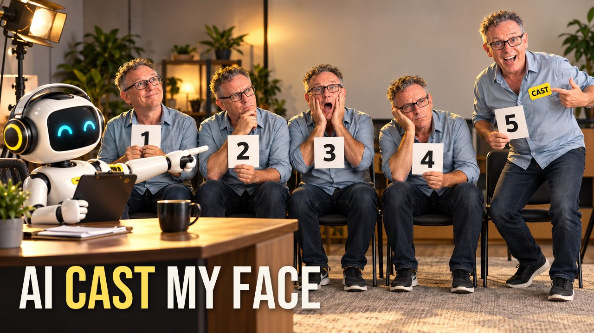
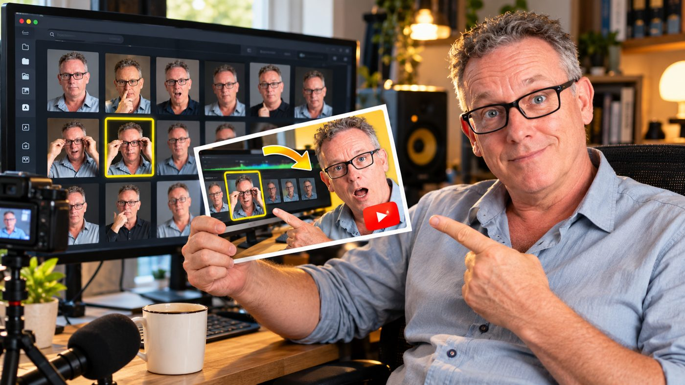
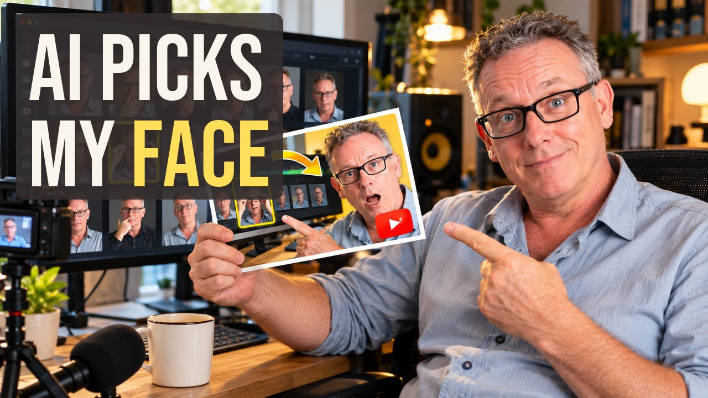
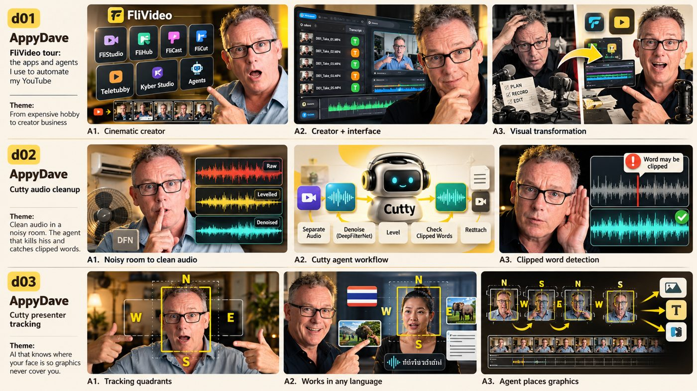
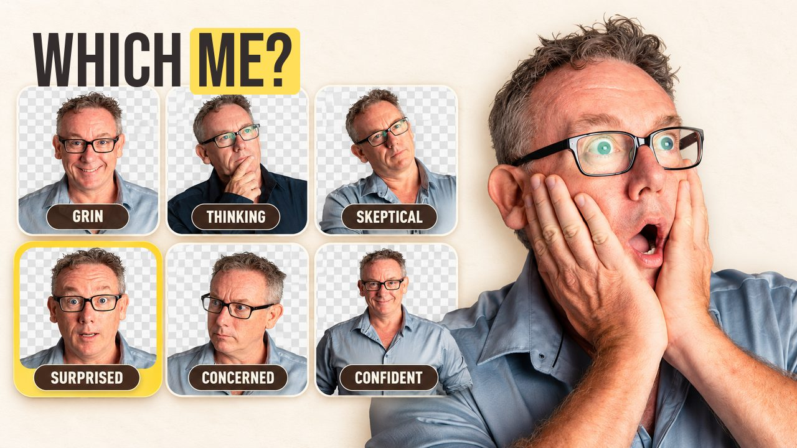
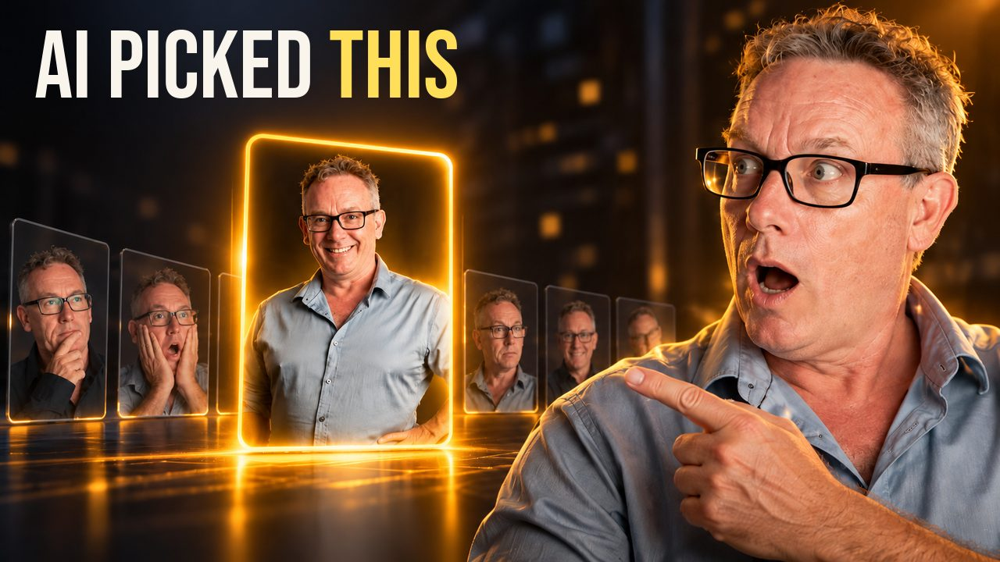
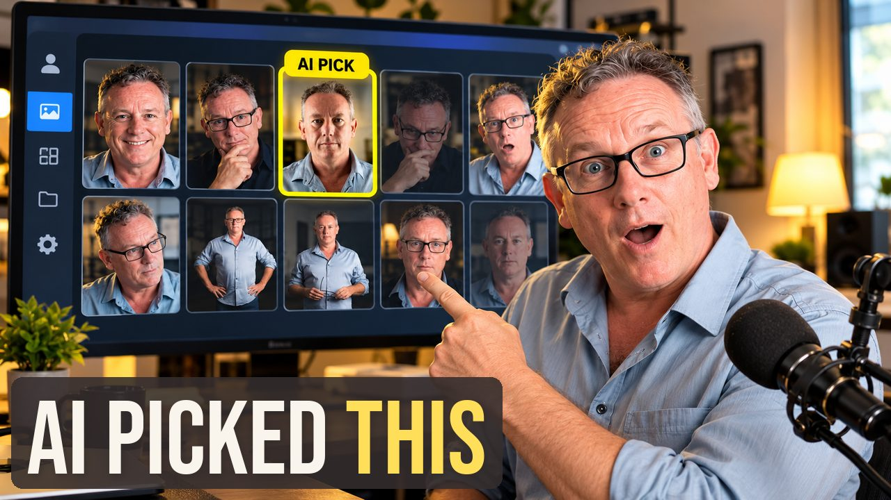
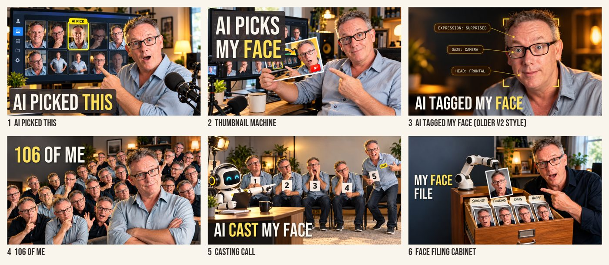

What happens behind the scenes when a d06 thumbnail gets made: who does each step, which files are involved, what the code and JSON actually look like, and how we got here.
Your idea: prose → JSON → chat window with reference images. That is exactly what runs now. Each box says who does it.
One line of prose from the video. "An AI casting director auditions five of my faces."
A small file, scenes/<id>.json: setting, event, people, props, labels, headline zone.
build_prompt.py merges the scene with the shared brand + style blocks into ONE JSON, about 2,300 characters.
Paste the JSON. Attach your board as the style reference plus 2–4 of your favourite headshots. It returns an image with no headline.
composite_headline.py draws the headline in Bebas Neue on this Mac: placement, wrap, brown panel.
A selection board of the finished thumbnails. You choose, or ask for changes.
| File | What it is | Changes |
|---|---|---|
scenes/<id>.json | The one file per thumbnail. The scene, which headshots to use, and where the headline goes. | Every thumbnail |
scenes/<id>.prompt.json | What actually gets pasted into ChatGPT. Built by the script, never hand-written. | Every thumbnail |
shared/brand-appydave.json | Palette, font note, and a one-line description of you. | Once |
shared/style-board.json | The look: natural rooms, flat graphics, and the banned list (particles, crowns, golden haze…). | Once |
style/style-reference-board.png | Your nine-tile board, attached to every run as the style reference. | Once |
tools/build_prompt.py | Scene + shared blocks → one compact JSON. | Rarely |
tools/composite_headline.py | Draws the headline onto ChatGPT's image. | Rarely |
tools/fonts/BebasNeue-Regular.ttf | The headline font (open licence, from Google Fonts). | Never |
presenter/appydave.json | Points at the Headshot Picker. Rule: photos are identity references, chosen from your favourites by shirt and angle. | When favourites change |
videos/d06/ | The d06 fact sheet, every run's raw image, final image, and the ChatGPT transcripts. | Per video |
schema.json, specs/, execution-instructions.md | History. The v1/v2 long-brief approach. Kept for reference, not used for new runs. | Frozen |
Your photos stay where they are: the Headshot Picker (artefact) and the T7 drive. Scene files refer to them by name, for example headshot-appydave-3.png.


Two of your favourites (c3, c9). Neutral on purpose. Every expression in the thumbnails was invented from photos like these.
A real example: the casting-call thumbnail. The scene file is the only part written for this thumbnail. The script adds the two shared blocks.
{
"id": "d06.b5",
"video": "d06: I turned my 106 headshots into an AI picker",
"prose": "An AI casting director auditions five of my faces and picks one for the thumbnail.",
"scene": {
"setting": "casting-audition room, plain back wall, soft daylight",
"event": "a friendly white robot casting director at a desk points at the winning Dave",
"subjects": [
"five Daves on chairs in a row, each holding a numbered card 1-5, each a different face: hopeful, sceptical, over-acted shock, bored, smug",
"the winner (right end) half-stands with a big delighted grin and a yellow CAST sticker on his chest"
],
"props": ["robot with headphones and clipboard, cute app-mascot design", "desk with coffee cup"],
"labels": ["1", "2", "3", "4", "5", "CAST"],
"mood": "bright, playful, funny"
},
"presenter": {
"identity_references": ["headshot-appydave-3.png", "headshot-appydave-11.png", "headshot-appydave-9.png"],
"outfit": "light blue-grey shirt",
"rule": "references show who Dave is; invent every expression and pose"
},
"headline_zone": "top-right of the back wall",
"headline": "AI CAST MY FACE"
}{
"brand": "AppyDave",
"palette": {
"yellow": "#ffde59 (one accent)",
"brown": "#342d2d",
"cream": "#faf5ec",
"amber": "#c8841a"
},
"headline_font": "Bebas Neue (added later, not by you)",
"presenter": "Dave: middle-aged man, short grey curly hair, black rectangular glasses; match the attached headshots"
}{
"look": "bright natural editorial YouTube-creator photo, real rooms, soft daylight key on face, a few warm practical lamps, background darker than face but readable",
"graphics": "crisp flat modern UI and icons, clean saturated colours for meaning, yellow only as an accent",
"glow": "only where a real screen or lamp emits light",
"never": [
"particles",
"light trails",
"lens flares",
"crowns",
"neon rims",
"golden haze",
"all-amber HDR grade",
"sci-fi holograms",
"text other than what scene.labels lists"
],
"style_reference": "style-reference-board.png (match its rendering, not its content)"
}{
"task": "Generate ONE finished 16:9 YouTube thumbnail image from this JSON. Keys are semantic; values are what I want.",
"scene": {
"setting": "casting-audition room, plain back wall, soft daylight",
"event": "a friendly white robot casting director at a desk points at the winning Dave",
"subjects": [
"five Daves on chairs in a row, each holding a numbered card 1-5, each a different face: hopeful, sceptical, over-acted shock, bored, smug",
"the winner (right end) half-stands with a big delighted grin and a yellow CAST sticker on his chest"
],
"props": [
"robot with headphones and clipboard, cute app-mascot design",
"desk with coffee cup"
],
"labels": [
"1",
"2",
"3",
"4",
"5",
"CAST"
],
"mood": "bright, playful, funny"
},
"presenter": {
"identity_references": [
"headshot-appydave-3.png",
"headshot-appydave-11.png",
"headshot-appydave-9.png"
],
"outfit": "light blue-grey shirt",
"rule": "references show who Dave is; invent every expression and pose"
},
"headline_zone": "top-right of the back wall (leave clear; the headline is added afterwards)",
"brand": {
"brand": "AppyDave",
"palette": {
"yellow": "#ffde59 (one accent)",
"brown": "#342d2d",
"cream": "#faf5ec",
"amber": "#c8841a"
},
"headline_font": "Bebas Neue (added later, not by you)",
"presenter": "Dave: middle-aged man, short grey curly hair, black rectangular glasses; match the attached headshots"
},
"style": {
"look": "bright natural editorial YouTube-creator photo, real rooms, soft daylight key on face, a few warm practical lamps, background darker than face but readable",
"graphics": "crisp flat modern UI and icons, clean saturated colours for meaning, yellow only as an accent",
"glow": "only where a real screen or lamp emits light",
"never": [
"particles",
"light trails",
"lens flares",
"crowns",
"neon rims",
"golden haze",
"all-amber HDR grade",
"sci-fi holograms",
"text other than what scene.labels lists"
],
"style_reference": "style-reference-board.png (match its rendering, not its content)"
},
"attach": [
"style-reference-board.png",
"headshot-appydave-3.png",
"headshot-appydave-11.png",
"headshot-appydave-9.png"
],
"output": "the image only, then one line: what you would change"
}
Both scripts are in the repo and can be re-run on any video. Nothing is done by hand in the chat.
#!/usr/bin/env python3
"""scene JSON + shared brand/style -> ONE compact JSON prompt for a chat image model.
Usage: build_prompt.py scenes/<id>.json [--out file]
The scene file is the only per-thumbnail input. Shared blocks live in shared/.
Prints the JSON to paste; its `attach` list is the reference images to upload with it.
"""
import json, sys, os
root = os.path.dirname(os.path.dirname(os.path.abspath(__file__)))
scene = json.load(open(sys.argv[1]))
prompt = {
"task": "Generate ONE finished 16:9 YouTube thumbnail image from this JSON. Keys are semantic; values are what I want.",
"scene": scene["scene"],
"presenter": scene["presenter"],
"headline_zone": scene["headline_zone"] + " (leave clear; the headline is added afterwards)",
"brand": json.load(open(os.path.join(root, "shared/brand-appydave.json"))),
"style": json.load(open(os.path.join(root, "shared/style-board.json"))),
"attach": ["style-reference-board.png"] + [r for r in scene["presenter"]["identity_references"]],
"output": "the image only, then one line: what you would change",
}
text = json.dumps(prompt, indent=1, ensure_ascii=False)
if "--out" in sys.argv: open(sys.argv[sys.argv.index("--out") + 1], "w").write(text)
print(text)#!/usr/bin/env python3
"""Text-layer compositor: overlay a spec's headline onto a generated image (post_composite).
Usage: composite_headline.py <spec.json> <generated.png> <out.png> [--highlight WORD] [--zone auto|spec]
- Reads text_layer.headline / color / accent from the spec.
- --zone auto (default): scores candidate zones by visual busyness (edge density) and places the
headline in the calmest one, because the image model doesn't always leave the zone the spec named.
--zone spec: use text_layer.bbox ([top,left,bottom,right], 0-1000).
- Font is fitted to the zone width (never below text_layer.minimum_size_px, default 64); a soft
shadow keeps it legible on busy ground. Also writes <out>-320.png, the mobile check.
Font: Bebas Neue (OFL, tools/fonts/).
"""
import json, sys, os
from PIL import Image, ImageDraw, ImageFont, ImageFilter, ImageStat
spec, src, out = sys.argv[1:4]
arg = lambda k, d=None: sys.argv[sys.argv.index(k) + 1] if k in sys.argv else d
t = json.load(open(spec))['text_layer']
hl = (arg('--highlight') or '').upper() or None
accent = t['accent'] if isinstance(t.get('accent'), dict) else {}
accent_words = [w.upper() for w in accent.get('words', [])]
color = t.get('color', '#342d2d')
min_px = t.get('minimum_size_px', 64)
FONT = os.path.join(os.path.dirname(__file__), 'fonts', 'BebasNeue-Regular.ttf')
img = Image.open(src).convert('RGB').resize((1280, 720), Image.LANCZOS)
W, H, M = 1280, 720, 40
# candidate zones (x0, y0, x1, y1): top/bottom bands, left/right/centre
Z = {'top-left': (M, M, 700, 210), 'top-right': (580, M, W - M, 210), 'top-centre': (240, M, 1040, 210),
'bottom-left': (M, 520, 700, H - M), 'bottom-right': (580, 520, W - M, H - M)}
if arg('--zone', 'auto') == 'spec':
b = t['bbox']; zone = (b[1] * W // 1000, b[0] * H // 1000, b[3] * W // 1000, b[2] * H // 1000); name = 'spec'
else:
edges = img.convert('L').filter(ImageFilter.FIND_EDGES)
score = {k: ImageStat.Stat(edges.crop(z)).mean[0] for k, z in Z.items()}
name = min(score, key=score.get); zone = Z[name]
d = ImageDraw.Draw(img)
words = t['headline'].split()
x0, y0, x1, y1 = zone
zw, zh = x1 - x0, y1 - y0
def fit(lines):
s = 170
while s > 20:
f = ImageFont.truetype(FONT, s)
if max(d.textlength(' '.join(l), font=f) for l in lines) <= zw and s * len(lines) * 0.95 <= zh + (s * 0.9 if len(lines) > 1 else 0): return s
s -= 4
return s
one = [words]
splits = [[words[:i], words[i:]] for i in range(1, len(words))]
best2 = max(splits, key=fit) if splits else one
size, lines = (fit(one), one)
if splits and fit(best2) > size * 1.25: size, lines = fit(best2), best2 # wrap only when it buys real size
if size < min_px: print('WARNING: headline below minimum', size, file=sys.stderr)
f = ImageFont.truetype(FONT, size)
lh = int(size * 0.92)
block_h = lh * len(lines)
yb = y0 if 'top' in name or name == 'spec' else y1 - block_h
shadow = Image.new('RGBA', img.size, (0, 0, 0, 0)); sd = ImageDraw.Draw(shadow)
for i, l in enumerate(lines):
tw = d.textlength(' '.join(l), font=f)
lx = x0 if 'left' in name or name == 'spec' else (x1 - tw if 'right' in name else x0 + (zw - tw) / 2)
sd.text((lx + 3, yb + i * lh + 4), ' '.join(l), font=f, fill=(0, 0, 0, 170))
img.paste(Image.new('RGB', img.size, 'black'), (0, 0), shadow.filter(ImageFilter.GaussianBlur(6)))
if '--pill' in sys.argv: # AppyDave brown panel behind the text: works on busy ground
ov = Image.new('RGBA', img.size, (0, 0, 0, 0)); od = ImageDraw.Draw(ov)
widths = [d.textlength(' '.join(l), font=f) for l in lines]
bx0 = min((x0 if 'left' in name or name == 'spec' else (x1 - w if 'right' in name else x0 + (zw - w) / 2)) for w in widths)
od.rounded_rectangle([bx0 - 22, yb - 4, bx0 + max(widths) + 22, yb + block_h + size * 0.12], radius=16, fill=(52, 45, 45, 225))
img.paste(ov, (0, 0), ov)
d = ImageDraw.Draw(img)
for i, l in enumerate(lines):
tw = d.textlength(' '.join(l), font=f)
x = x0 if 'left' in name or name == 'spec' else (x1 - tw if 'right' in name else x0 + (zw - tw) / 2)
y = yb + i * lh
for word in l:
w = d.textlength(word, font=f); fill = color
key = word.strip('?!.').upper()
if hl and key == hl.strip('?!.'):
d.rounded_rectangle([x - 10, y + size * .14, x + w + 10, y + size], radius=10, fill='#ffde59'); fill = '#342d2d'
elif key in accent_words:
fill = accent.get('color', '#ffde59')
d.text((x, y), word, font=f, fill=fill)
x += w + d.textlength(' ', font=f)
img.save(out)
img.resize((320, 180), Image.LANCZOS).save(out.replace('.png', '-320.png'))
print(out, name, size, len(lines), 'line(s)')Image models misspell words and put text wherever they like, so ChatGPT is told to leave the headline out. The script adds it afterwards. That's why you saw it in the PNG but not in ChatGPT.


composite_headline.py --zone spec --pill.| Option | What it does |
|---|---|
--zone spec | Puts the text in the area the scene file named. The reliable mode. |
--zone auto | Guesses the calmest area. Unreliable: a plain shirt looks "calm", so text lands on you. |
--pill | Adds a brown AppyDave panel behind the text so it reads on any background. |
| (automatic) | Sizes the text to fit, and wraps onto two lines when that makes it much bigger. Warns if it drops below 64px. |





| Chat | Link | Notes |
|---|---|---|
| Research thumbnail prompts (the original board chat) | open | Made the 9-tile board, explained why it worked, extracted the method, diagnosed test 1. Finished. Nothing pending. |
| Test 1: spec copied your photos | open | You said: half done, Canva-like. |
| Test 2: AI picked this (v2) | open | First invented pose. Too much gold glow. |
| Face tagging (v2) | open | Clean, less story. |
| Thumbnail machine (v2) | open | Good idea, light-show style. |
| 106 of me (v3) | open | Board style reference attached for the first time. |
| Casting call (v3, long brief) | open | 12,000-character brief. |
| Face filing cabinet (v3) | open | |
| Casting call (compact JSON) | open | Your pipeline: 2,300 characters. As good or better. |
| AI picked this (compact JSON) | open | |
| Thumbnail machine (compact JSON) | open |
Most runs happened in a brand-new chat with nothing but the JSON and images. That's the repeatability test. Some have since been moved into your "thumbnails" project in ChatGPT. The original chat's last section (the creative checklist) is its advice after seeing test 1, and it's now part of the instructions.
| Question | Why it matters |
|---|---|
| Which d06 thumbnail would you use? | It's the real test of the system. |
| Do the invented faces look like you? | The whole approach depends on ChatGPT drawing a recognisable you. |
| Are dark or moody thumbnails allowed? | Your artefacts are light-only; your favourite board tiles are mostly dark. Right now it's allowed as an experiment. |
| Next: a skill? | Once you're happy, the pipeline becomes a skill: "make thumbnails for d07". |